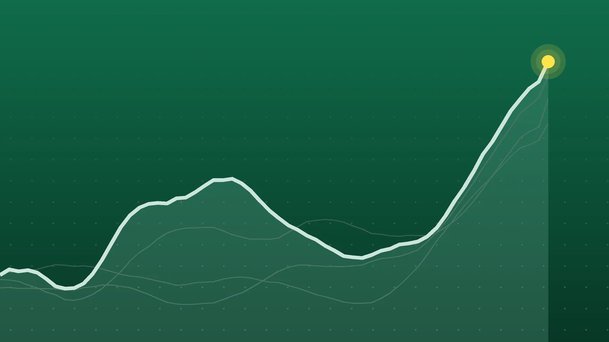

SportsExplainer
NBA Scores, Oct. 23: Hawks Rout Hornets by Franchise-Record 47
Road teams won nine of Friday’s 12 games, four were decided by four points or fewer, and eight teams are now 2-0 while eight of Friday’s losers are still winless.

Quick take
- Atlanta beat Charlotte 128-81. The 47-point margin is the largest in Hawks history, topping a 46-point win over Sacramento in 2017.
- Houston held off San Antonio 114-110 in Austin when Amen Thompson blocked Victor Wembanyama’s tying layup with less than a second left.
- Jayson Tatum scored 36 as Boston beat New York 107-103, leaving the defending champion Knicks 0-2.
- Road teams went 9-3, and Utah’s 120-119 win over New Orleans was the closest game of the night.
Why it's trending Twelve NBA games on Friday, Oct. 23, included a record Hawks blowout, a last-second block in Austin and a Celtics-Knicks finish.
NBA scores for Oct. 23
Atlanta turned Friday’s 12-game NBA slate into a history lesson, beating Charlotte 128-81 on the road. No Hawks team had ever won by more than 46, Field Level Media reported, so the 47-point gap is a new franchise high.
The tighter games were the better theater. In Austin, Houston escaped San Antonio 114-110 when Amen Thompson swatted Victor Wembanyama’s layup in the final second. In Boston, Jayson Tatum scored 36 and the Celtics beat the Knicks 107-103. All 12 games ended in regulation, and none was postponed, according to Land of Basketball’s October results.
All final scores
| Winner | Score | Loser | Note |
|---|---|---|---|
| Chicago Bulls | 132-125 | at Milwaukee Bucks | Norman Powell 25; Tyler Herro 34 for Milwaukee in its home opener |
| Minnesota Timberwolves | 115-93 | at Orlando Magic | Wolves outrebounded Orlando 60-43; Wendell Carter Jr. 20 |
| Toronto Raptors | 112-102 | at Washington Wizards | Scottie Barnes 28 points, 14 rebounds |
| Dallas Mavericks | 121-105 | at Indiana Pacers | Kyrie Irving 24; Pascal Siakam 23 for Indiana |
| Boston Celtics | 107-103 | New York Knicks | Jayson Tatum 36; Boston’s first win |
| Atlanta Hawks | 128-81 | at Charlotte Hornets | Largest win in franchise history; Charlotte had 27 turnovers |
| Detroit Pistons | 128-111 | at Miami Heat | John Collins 23; Giannis Antetokounmpo 36 and 12 rebounds |
| Utah Jazz | 120-119 | New Orleans Pelicans | Jaren Jackson Jr. 24 and 10 rebounds in the home opener |
| Houston Rockets | 114-110 | at San Antonio Spurs | Alperen Sengun 29; game played in Austin, Texas |
| Los Angeles Lakers | 125-117 | LA Clippers | Austin Reaves 28; Lakers won the third quarter 39-26 |
| Portland Trail Blazers | 128-120 | at Sacramento Kings | Deni Avdija 26; Domantas Sabonis had a triple-double |
| Memphis Grizzlies | 111-108 | at Golden State Warriors | Ty Jerome 28; Stephen Curry 24 |
The Bulls-Bucks game tipped at 4 p.m. ET, per NBA.com’s game page. FOX6 Milwaukee reported it was moved up four hours so it would not overlap with World Series Game 1 in Milwaukee.
Thompson’s block settles it in Austin
The Spurs’ “home” game was played at the Moody Center, which also made it a homecoming for former Texas star Kevin Durant. Sengun scored eight points in a row during the fourth quarter, and Durant made a big 3 with 1:34 to go, AP reported.
San Antonio’s last possession had a strange twist. Wembanyama banked in a long 3, but it was wiped out because coach Mitch Johnson had already called timeout with 5 seconds left. Thompson then blocked Wembanyama’s layup try, and Fred VanVleet’s two free throws closed the scoring. Wembanyama finished with 25 points and 13 rebounds. Thompson had 20 and 10, and Dylan Harper added 20 for the Spurs, according to the FOX Sports box score.
Tatum answers a rough opener
Tatum shot 6 of 23 and scored 13 in Boston’s season-opening loss. On Friday he went 14 of 26, adding nine rebounds, seven assists and three steals, NBA.com reported. His step-back 3 with 35 seconds left put the game away. He scored 25 of his 36 after halftime, according to AP.
The lead changed hands 12 times. Boston took control with a 33-24 third quarter and started the fourth up 10 before New York made a late push. Karl-Anthony Towns led the Knicks with 22, while Mikal Bridges went scoreless and is 2 of 16 from the field this season. NBA.com noted that New York is the first defending champion to lose its first two games since the 2011-12 Mavericks. It was the 503rd game between the two franchises, the most of any NBA pairing.
Atlanta’s record night
The Hawks led 68-43 at halftime and outscored Charlotte 60-38 after the break. Atlanta shot 50.5% from the field, and Aaron Wiggins hit 7 of his 9 shots. He and Jalen Johnson each scored 19, and Johnson added eight assists. Seven Hawks reached double figures.
Charlotte’s offense never found a rhythm. The Hornets made 2 of 15 3-point tries in the first quarter, gave the ball away 27 times and got 2-of-14 shooting from Brandon Miller. Naz Reid led them with 17. The old club record was a 126-80 win over Sacramento on Nov. 15, 2017.
What it means
Among the 24 teams that played Friday, two games in:
- 2-0 (8 teams): Houston, Detroit, Atlanta, Minnesota, Portland, the Lakers, Toronto and Memphis.
- 1-1 (8 teams): Chicago, Boston, Utah, Charlotte, Washington, Dallas, Indiana and the Clippers.
- 0-2 (8 teams): New York, Miami, San Antonio, Milwaukee, Orlando, New Orleans, Sacramento and Golden State.
Road teams went 9-3. Only Boston, Utah and the Lakers won at home, and Sacramento and Milwaukee lost their home openers.
Four games were decided by four points or fewer: Utah by one, Memphis by three, and Boston and Houston by four. Utah’s win came after New Orleans led 90-86 entering the fourth quarter, according to Crescent City Sports. It was also the Jazz’s first win, the Salt Lake Tribune noted.
Miami’s problem is defense. The Heat have given up 259 points in two games, a franchise worst, and Detroit led from start to finish, AP reported. That works out to about 130 points allowed per game. The Pistons are 2-0 for the first time since 2018-19. Miami has opened 0-2 eight times in 39 seasons.
Elsewhere, Minnesota won by 22 even though Anthony Edwards made only 5 of 23 shots, AP reported. Toronto forced 23 turnovers in Washington, AP’s recap said. The Lakers forced 26 and pulled away in the third quarter, Field Level Media reported, while Walker Kessler had 22 points and six blocks, per The Sporting Tribune. Portland earned its first road win, KATU reported, despite 33 points from Kings guard Darius Acuff Jr. Sabonis had 27 points, 19 rebounds and 10 assists, The Kings Herald reported.
The other finals come from the SI.com box scores for Dallas-Indiana and Memphis-Golden State. Pregame records come from the CBS Sports scoreboard. For the opening-night results, see our Oct. 21 roundup.
What’s next
Saturday, Oct. 24, has eight games, all times ET:
- Miami at Charlotte, 6 p.m.
- Brooklyn at Cleveland, 7:30 p.m.
- Milwaukee at Philadelphia, 7:30 p.m.
- San Antonio at Dallas, 8 p.m.
- Washington at Chicago, 8 p.m.
- Houston at Atlanta, 8:30 p.m., a matchup of 2-0 teams
- New Orleans at Denver, 9 p.m.
- Golden State at Phoenix, 10 p.m.
Eleven of the 16 teams on Saturday’s schedule also played Friday. The Knicks host Orlando on Sunday, and the Celtics host Chicago on Monday.
Sources
- Land of Basketball 2026-2027 NBA Schedule and Scores: October 2026Oct. 24, 2026
- CBS Sports NBA Scores 2026-27 - CBS SportsOct. 23, 2026
- Field Level Media Hot-shooting Hawks set franchise mark with 47-point rout of HornetsOct. 23, 2026
- Associated Press via KSAT Amen Thompson blocks Wembanyama in final second as the Rockets beat the Spurs 114-110 in AustinOct. 23, 2026
- FOX Sports Rockets vs. Spurs - Final Score - October 23, 2026Oct. 23, 2026
- Associated Press via WJAR Jayson Tatum scores 36, sizzles down the stretch as Celtics fend off Knicks 107-103Oct. 23, 2026
- NBA.com 4 Takeaways: Jayson Tatum comes up clutch as Celtics top Knicks for first win of the seasonOct. 24, 2026
- Associated Press via ABC News Pistons roll past Heat 128-111, adding to Miami's season-opening woes on defensive endOct. 23, 2026
- FOX6 Milwaukee Milwaukee Bucks fall to the Bulls 132-125 in home openerOct. 23, 2026
- Associated Press via myMotherLode.com Despite low output from Anthony Edwards, Timberwolves dominate glass and roll Magic 115-93Oct. 23, 2026
- Associated Press via WRAL Barnes, Barrett pace stingy Raptors to a 112-102 win over the WizardsOct. 23, 2026
- SI.com Dallas Mavericks vs Indiana Pacers Final Score & Box Score — October 23, 2026Oct. 23, 2026
- SI.com Memphis Grizzlies vs Golden State Warriors Final Score & Box Score — October 23, 2026Oct. 23, 2026
- Salt Lake Tribune The Jazz hang on to beat the Pelicans 120-119. Here are 3 takeaways from Utah's first win of the season.Oct. 23, 2026
- Crescent City Sports Pelicans let late lead slip away in 120-119 loss at JazzOct. 24, 2026
- Field Level Media Lakers ride 39-point 3rd quarter to surge past ClippersOct. 24, 2026
- The Sporting Tribune via Yahoo Sports Lakers outlast Clippers behind big threeOct. 24, 2026
- KATU Trail Blazers keep it rolling with season's first road win; beat Kings, 128-120Oct. 23, 2026
- The Kings Herald Acuff Scores 33, Sabonis Posts Triple-Double as Kings Fall to Blazers 128-120Oct. 23, 2026
- NBA.com Chicago Bulls vs Milwaukee Bucks Oct 23, 2026 Box Scores | NBA.comOct. 23, 2026
Keep reading

NBA Scores, Oct. 21: Edwards’ 45 Spoils Giannis’ Heat Debut
NBA scores for Oct. 21, 2026: all 11 final results, including Anthony Edwards’ 45 in Miami, Ty Jerome’s 45 for Memphis and Raptors 135, Bulls 92.
Sports Scores, Oct. 22: Other Results From NBA, NFL and Tennis
Other sports results for Oct. 22, 2026: the NBA’s two games, Bears 30, Patriots 24 on Thursday Night Football, and 20 WTA and ATP singles results.
NBA Scores, Oct. 24: Nuggets Erase 23-Point Gap to Win in OT
NBA scores for Oct. 24, 2026: all 8 finals, including Denver’s 141-135 overtime comeback over New Orleans, Booker’s 43 for Phoenix and Philadelphia’s 3-0 start.